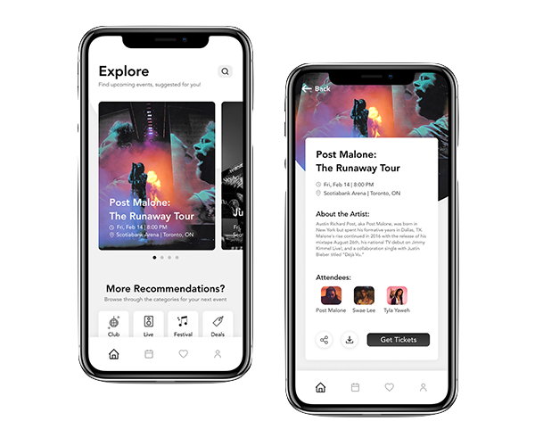

ShowMi - Case study
Designing a solution to track and share concert memories.
The problem
How can I track artists/events and share high-quality media?
As a huge fan of concerts and festivals, I haven’t found a solution for efficiently tracking all the artists I’ve seen or sharing high-quality media with my friends. Currently, my friends and I save screenshots of the lineup to keep track of who we’ve seen or use social media platforms, which often reduces video quality, to share content.
User research
Is the problem significant enough?
A survey was used to validate that users actually lack a solution to effectively track event statistics and if people actually find this to be a pain point. Survey findings showed that:

60% care about tracking artists.

60% don't keep track of artists.

83% care about tracking events.

48% don't keep track of events.
Information architecture
Breakdown of the information architecture and user flow.

Feature 1
Intuitive display of event statistics
Tracks the number of concerts attended, artists seen live, and how many times. Links to streaming profile of each artist.
A/B testing
Feature 1: intuitive display of event statistics
A/B testing was conducted on the Profile page because that is the core functionality of the app. After studying how 10 users interact with the wireframes, I found that participants prefered Wireframe A as Wireframe A looks more like a standard profile page and has simpler navigation gestures.

70%interacted with Wireframe A with more ease than with Wireframe B
Feature 2
Store & share high-quality content
A method for relieving your best moments... after the event. Upload, share, and view concert footage with friends, using a public feed or private social-sharing links. To do this, I asked survey participants what they like and what their pain points are for the current media-sharing platform they use
User feedback
Feature 2: Store & share high-quality content
Participants critiqued the visual layout, mentioning that it appeared clustered and
messy, especially with the disorganized video thumbnails. To ideate on this, I came up
with a few HMW questions that would guide me as I did competitve research.
• HMW differentiate this from any normal photo album?
• HMW better establish hierarchy between elements and add more whitespace?
Feature 3
Upcoming concert recommendations
Surveys showed that participants wanted to see personalized event recommendations based on past attendance and music taste.
Navigation exploration
Feature 3: Upcoming concert recommendations
Wireframes in the first iteration combined all the screens that involved event cards.
These included the
Past, Upcoming, and Explore screens. However, user tests showed that participants were
confused with the
gestures to navigate and unsure why Recommendations were grouped with event statistics.
So, I went back to the drawing board and came up with some more guiding questions.
• What other methods of displaying sub-menus can be used to improve
accessibility?
• Should 'recommended events' be separated from 'past events' and 'upcoming events'
to highlight it as a core feature?
Designing cards
Feature 3: Upcoming concert recommendations
ShowMi uses plenty of cards to display the events. The perfect card layout had to be a balance between: being visually appealing, easily scan important information (ie. event date or venue location), and accommodate various types and dimensions of thumbnail images.
Card 1

Taking inspiration from Facebook's event page. However, this wasn't very mobile friendly as only 2 cards could be on the screen at once in order to keep all necessary information legible.
Card 2

The 'Interested' and 'Share' buttons were removed as it didn't add much value in user tests. The category tag was also removed as the feature image implies the event genre clearly.
Card 3

This layout is narrower - allowing for more cards to be shown on the phone screen at once. However, it's less scannable and the feature iamge may be too small to see.
Card 4

My personal favourite however, very few feature images would fit perfectly in this card layout.
The solution
Putting it all together
Walkthrough of the final deliverable: an interactive prototype. Screens were created using Figma, animated using Principle, and illustrations were made with Procreate.
Takeaways & reflection
What did I learn from this?
Using design systems to build consistency
Crafting the visual interface meant I was constantly implementing tiny changes throughout the entire prototype. Exploring how to create a design system really saved me countless hours and also made it much easier to establish consistency, whether that be with defining margins, font styles, or shadows.
Deconstruct and improve on existing solutions
In the beginning, I wanted to create something unlike anything else. However, I soon realized this isn’t feasible nor practical. I turned my efforts to breaking down existing designs (a lot of inspiration from Facebook, Apple Photos, and Dribbble) and analyzing why it works, why it doesn’t work, and what I can do to take it a step further.
Detach bias and turn feedback into opportunities
Interpreting user tests showed me the importance of understanding my own bias and instead, to let the research and testing guide the decision making. This allowed me to turn feedback into opportunities. If I didn’t do this, I would not have thought of adding a recommendations page, nor would I have separated it from the rest of the events.